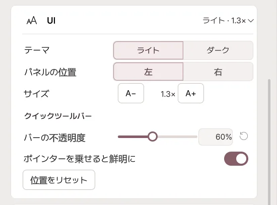
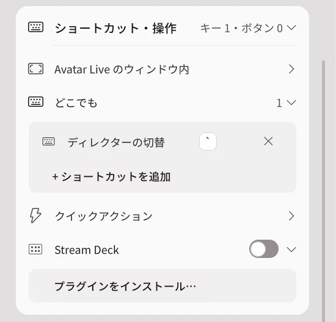
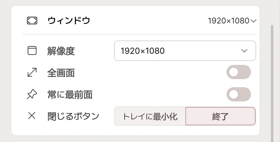
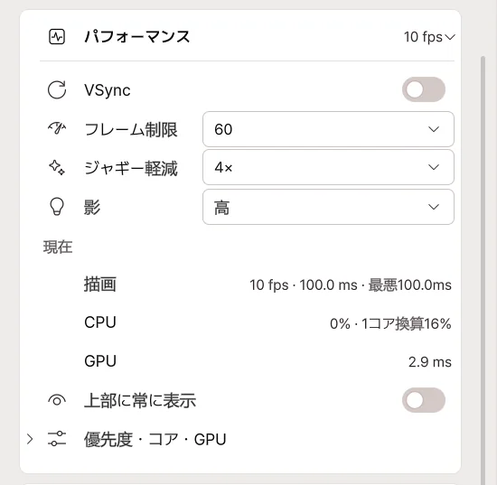
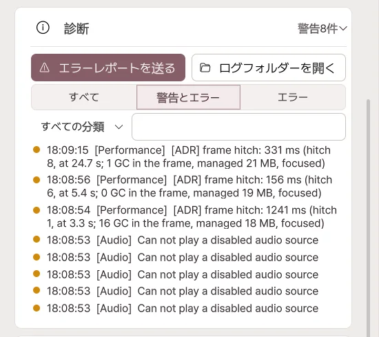
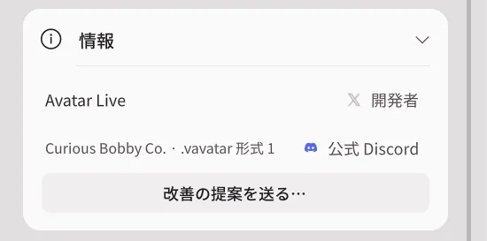
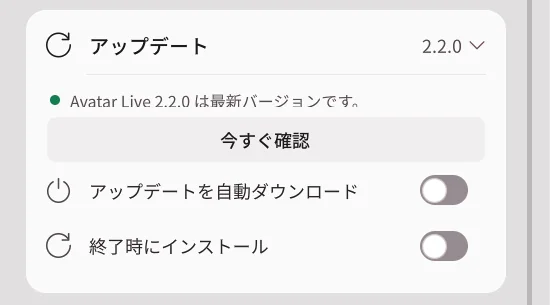

設定
ウィンドウ・性能・言語・ショートカットキーとプログラムの管理を設定します。
一般
言語と画面サイズ

言語で韓国語・English・日本語・简体中文を選択します。UIでテーマ・パネルの位置・文字サイズを変更します。文字が小さい場合はUIの倍率を上げてください。
ショートカットキー

- ショートカットキーの追加を押します。
- 実行する動作を選びます。
- 使用するキーの組み合わせを指定します。
- 表情・トグルは、押している間だけ適用するか、再度押すまで保持するかを選びます。
グローバルショートカットは、ゲームが前にあっても機能します。他のアプリでよく使うキーと重ならないように選んでください。
設定検索
上部の虫眼鏡に AFK・ミラー・Spout2・言語のように探したい設定名を入力します。結果を押すと該当メニューに移動し、カードが展開されます。
ウィンドウ · パフォーマンス
窓

| 項目 | 変わること |
|---|---|
| ウィンドウサイズ | 私のモニターでプログラムが占めるサイズです。 |
| 全画面 | プログラムを画面いっぱいに表示します。 |
| 常に最前面 | 他のプログラムより前に表示します。 |
| ウィンドウを閉じる | Xを押したときに終了するかトレイに隠すかを設定します。 |
出力解像度は出力画像で別に設定します。
性能

- FPS制限: 高くすると滑らかになりますが、PCへの負担が増えます。低くすると電力使用を減らします。
- 画質: 上げると細部が鮮明になり、グラフィックカードへの負担が増えます。
- 影: オフにすると軽くなりますが、髪の毛・あごの下などの影が減ります。
- 後処理：重いエフェクトはエフェクトで一つずつ減らしてみます。
ファイル · 情報
ライセンスと診断

- 別のコードを入力: ライセンスコード、Proアップグレード、DLC部屋パックのBOOTH注文番号を、すべてここに入力します。DLCの注文で今のライセンスは変わりません。
- エラーレポートを送る: 問題の説明と診断資料を送ります。実際の送信はユーザーが選択した場合に行われます。配信連携を使用中なら、接続の状態と最近のイベントも含まれます。詳しくは配信連携がうまくいかないときを確認してください。
- 改善点を送る: 欲しい機能や使用中の不便な点を送ります。
- ログフォルダを開く: 診断用ログがあるフォルダを開きます。
情報

設定 → 情報で、.vavatar形式のバージョンと開発者のリンクを確認できます。公式 Discordのリンクからお知らせを受け取ったり質問したりでき、改善の提案を送るで欲しい機能を伝えられます。
アップデート

| ボタン・項目 | すること |
|---|---|
| 今すぐ確認 | 新しいバージョンがあるか確認します。 |
| ダウンロード | アップデートファイルを受け取ります。 |
| 自動ダウンロード | 有効にすると、新しいアップデートを事前に受け取ります。 |
| 再起動してインストール | プログラムを再起動してアップデートを適用します。 |
| 終了時にインストール | プログラムを終了するときに受け取ったアップデートを適用します。 |
起動時に新しいバージョンを一度確認します。自動ダウンロードをオフにしても、アップデート通知が表示される場合があります。